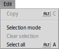

| Tabele |
| File Modifiche Sgarfe Imagjin Visualize Atribûts Scurtis di tastiere |
 MostreImagjin
MostreImagjin
| Deskbar: | Nissune vôs, di norme inviât fasint dopli-clic suntun file supuartât. | |
| Posizion: | /boot/system/apps/ShowImage | |
| Impostazions: | ~/config/settings/ShowImage_settings |
MostreImagjin ti permet di viodi lis imagjins in ducj i formâts supuartâts midiant Traduzion dâts. I gnûfs formâts a vegnin ricognossûts in automatic cuant che il lôr tradutôr al ven zontât al sisteme. Chest al è stât fat, par esempli, pai files des iconis vetoriâls di Haiku, lis imagjins di WonderBrush o cuant che lis imagjins WebP a son deventadis disponibilis.
MostreImagjin nol furnìs funzions di modifiche, ma ti permet di selezionâ une aree retangolâr e salvâle intun dai formâts supuartâts. Tu puedis ancje voltâ e ribaltâ lis imagjins, ma chestis operazions no modifichin di fat lis imagjins, a zontin nome un atribût che al indiche di voltâ o ribaltâ la imagjin in automatic la prossime volte che e ven vierte.
Passìn par ordin i menûs, lassant pierdi i elements ovis.
 File
File

Il sot-menù al liste lis plui resintis imagjins viodudis.
ti permet di vierzi la imagjin atuâl in cualsisei aplicazion che e supuarte il so gjenar di file.
Il sot-menù ti permet di sielzi un formât par salvâ la imagjin corinte.
al vierç lis preferencis dal Fonts par meti in mût svelt la imagjin corinte tant che fondâl dai tiei spazis di lavôr.
Modifiche

Cuant che la e ven ativade ̵ disponibile ancje cu la icone di retangul a liniutis de sbare dai struments ̵ tu puedis selezionâ une aree retangolâr de imagjin che tu puedis strissinâ e molâ sul Scritori o in cualsisei cartele, par salvâle. Strissinant cul boton di diestre dal mouse, cuant che si molarà il frament, al vignarà mostrât un menù che ti permetarà di sielzi un altri formât di imagjin.
Se no tu desideris cambiâ prime modalitâts, tu pudis creâ chest ricuadri di selezion te "modalitât normâl" nome tignin fracât CTRL intant che tu strissinis cul clic di çampe.
o ESC a gjavaran il ricuadri de selezion.
Sgarfe

Dopo vê viert une imagjin tu puedis esplorâ daurman dutis lis altris imagjins inte sô cartele (o tal barcon dai risultâts di une interogazion) fracant ↑/↓ o ←/→. Tu puedis viodi la selezion che e cambie, tal barcon di Tracker.
Al esist un mût svelt par vierzi la cartele de imagjin che si sta viodint e ancje navigâ su chês te cartele superiôr e tes sot-cartelis. Al funzione come cu la navigazion a sgarfâ in Tracker fasint clic inte aree des informazions te sbare di stât, che e mostre la dimension, il nivel di ingrandiment e il formât de imagjin che si sta viodint.
Cjalant il menù , si viôt un altri gjenar di navigazion: Cualchi formât di imagjin, come il TIFF, a puedin tignî dentri plui pagjinis intun file sôl. I comants come and ti permetin di navigâ tra chês pagjinis.
Imagjin

Il menù al ufrìs cualchi manipolazion di imagjin necessarie pai visualizadôrs di imagjins: la rotazion e il ribaltament de imagjin.
Note, dut câs, che i dâts de imagjin visualizade no vignaran modificâts. Al ven dome zontât al file un atribût, cussì che lis prossimis voltis che tu le vierzarâs, tu le viodarâs voltade o ribaltade.
Visualize

Il menù al da la pussibilitât di fâ partî une di dutis lis imagjins che a stan intune cartele (o di un barcon che al à i risultâts di une interogazion) e stabilî un di 2 a 20 seconts.
Altris comants si aplichin ae imagjin cumò visualizade (cence cambiâ la dimension dal barcon):
al mostre la imagjin cuntun fatôr di ingrandiment dal 100%.
al torne a limitâ la imagjin tal ricuadri dal barcon, p.e. dopo vêle ingrandide o vê ridimensionât il barcon.
Cun e si spostisi dentri e si tirisi fûr cuntun increment dal 10%. L'ingrandiment al ven fat ancje cu la rudielute dal mouse; par scori ator intune imagjin plui grande dal barcon al baste tignî fracât il clic di çampe e strissinâ il mouse ator.
Dôs impostazions no si aplichin ae imagjin che si sta visualizant e a vegnin tignudis iniments cuant che si navighe di une imagjin a chê dopo:
al apliche un filtri une vore svelt, cuant che si sta fasint un zoom, par ridusi lis liniis cretosis e produsi un risultât plui morbit.
al slungjarà lis imagjins plui piçulis par jemplâ il ricuadri dal barcon corint.
Dopo si à une modalitât cuntune opzio par fâ che e sorepon il non dal file in bas te imagjin.
Par ultin, al mostrarà/platarà i controi grafics:

De çampe ae diestre: Imagjin precedente, imagjin sucessive, proiezion diapositivis (in modalitât plen visôr), modalitât selezion, dimensions origjinâls, adate al barcon, ingrandìs, impiçulìs, pagjine precedente e sucessive (cuant che si à un formât imagjin come TIFF che al permet plui pagjinis intun sôl file).
La plui part dai comants doprâts plui dispès a son disponibii ancje dal menù contestuâl che si à cul clic diestri su pe imagjin. Util cuant che si è in modalitât plen visôr.
Atribûts

Chi tu puedis stabilî une tra 1 e 10 de imagjin atuâl, o sielzi par tornâ a metile a "cence valutazion" (= "0").
In Tracker, lis valutazions a vegnin visualizadis come numar di stelis intune colone dai atribûts clamade "Rating". Cinc stelis a rapresentin i 10 valôrs pussibii, cun passaçs di miezis stelis. Par esempli, une valutazion di 7 e ven mostrade come 7 / 2 = 3.5 stelis: ★★★⯪☆.
Tu puedis modificâ la valutazion ancje dal Tracker: selezione il file, sielç dal menù e frache TAB par lâ ae colone "Rating". Cumò tu puedis inserî il gnûf valôr numeric che al deventarà une valutazion in stelis dopo vê fracât INVIE.
Scurtis di tastiere
Chi e je une liste des scurtis plui utilis:
| ← / ↑ | Imagjin precedente | |
| → / ↓ | Prossime imagjin | |
| CANC | Môf te scovacere | |
| + | Ingrandìs | |
| - | Impiçulìs | |
| 0 | Dimension origjinâl (ingrandiment al 100%) | |
| 1 | Adate al barcon | |
| ALT INVIE | Comute modalitât plen visôr (ancje cun dopli-clic) | |
| CTRL | Intat che si ten fracât CTRL tu creis un ricuadri di selezion cence passâ in maniere esplicite ae modalitât selezion. |